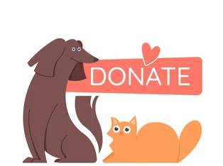

1. Спасителна и лечебна дейност
Нашият екип работи неуморно за спасяването на бездомни, ранени или изоставени животни, като осигурява спешна ветеринарна помощ и рехабилитация.
2. Приютяване и осиновяване
Приютяваме животни във временни домове, докато намерим любящи осиновители. Работим както с местни семейства, така и с международни партньори.
| Стъпка | Описание |
|---|---|
| Попълване на въпросник | Потенциалният осиновител предоставя информация за себе си. |
| Оценка на дома | Проверяваме условията за животното. |
| Подписване на договор | Гаранция, че животното ще бъде третирано като член на семейството. |
3. Програми за кастрация и превенция
За да намалим популацията на бездомни животни, провеждаме кастрации, чипиране и ваксинации, както и информационни кампании за отговорно отношение към домашните любимци.
4. Финансиране и партньорства
Цялата ни дейност се финансира от дарения. Работим с местни зоомагазини, ветеринарни клиники и международни организации.
5. Образователна и информационна дейност
Организираме семинари и кампании за образоване на обществото относно проблемите на бездомните животни и тяхното решаване.